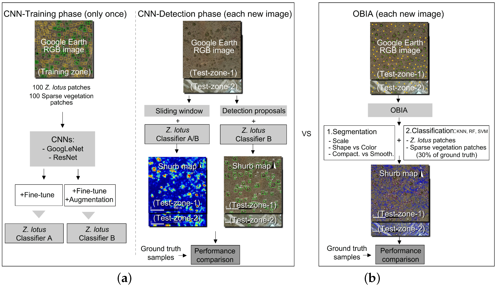

8 Week 7 Classification 2
8.1 Summary
8.1.1 Object-Based Image Analysis
- Pixel-based classification treats each pixel as an independent unit, but real-world land-cover features are usually spatially continuous objects, such as roads, buildings, or vegetation patches.
- It uses segmentation to group neighbouring pixels with similar spectral characteristics into objects or superpixels, and then classifies these larger units instead of single pixels.
- In practice, this means creating larger homogeneous units before classification. Compared with pixel-based outputs, OBIA can produce results that are closer to real land-cover boundaries and can reduce fragmentation and noise.
- Its advantage is that it is suitable for high-resolution imagery and can combine spectral information with spatial context, although the results are quite sensitive to segmentation parameters.
8.1.2 Sub-pixel Analysis
- It addresses the problem of mixed pixels, especially in medium- and low-resolution imagery, where a single pixel may contain multiple land-cover types.
- Instead of assigning one single class directly, it estimates the proportion of different endmembers within each pixel, so the output is closer to fractional composition.
- Selecting endmembers or training polygons that represent relatively pure surface spectra makes this process clearer and also shows how dependent it is on endmember selection.
- This method is suitable for heterogeneous surfaces, especially in urban areas, although it is sensitive to endmember choice and is more difficult to validate.
8.1.3 Accuracy Assessment
- Classification results cannot be judged only by visual inspection, because a map may look reasonable but still not be reliable.
- The confusion matrix is the basis of accuracy assessment, because it compares predicted classes with reference data and reveals different types of error.
- User’s accuracy corresponds to precision and shows how many pixels classified as a given class are actually correct, while producer’s accuracy corresponds to recall and shows how many true pixels of that class are successfully identified.
- The F1 score combines precision and recall, so it is useful when both omission errors and commission errors are important.
8.1.4 Spatial Cross-validation
- For spatial data, a random train-test split may not be strict enough.
- Nearby observations are often more similar, so spatially close training samples and test samples may lead to overly optimistic accuracy values.
- Spatial cross-validation solves this problem by grouping the data into spatial folds, which provides a more realistic test of model generalisation
8.2 Application
8.2.1 Object-based image analysis (OBIA)
Object-based image analysis (OBIA) is particularly useful when land cover features exhibit spatial continuity, while pixel-based classification tends to produce fragmented outputs. For example, in cropland extraction, pixel-based approaches are highly sensitive to spectral heterogeneity and mixed pixels, often resulting in a “salt-and-pepper” effect. In contrast, OBIA treats image objects rather than individual pixels as the unit of analysis and integrates spectral, shape, and texture information, making it more suitable for complex land cover mapping (Lv and Hong, 2024). In agricultural studies, this workflow has been implemented through SNIC segmentation combined with Random Forest (RF) and Support Vector Machine (SVM) classification, demonstrating that OBIA can be applied in practice for large-scale cropland extraction in complex terrain (Lv and Hong, 2024).
Studies on shrub detection further illustrate why OBIA is well suited to high-resolution imagery. As shown in Figure 1b (Guirado et al., 2017), the OBIA workflow for each new image involves segmentation followed by classification, with key segmentation parameters such as scale, shape versus colour, and compactness versus smoothness influencing the final results. This demonstrates that OBIA is not simply a classifier, but a complete workflow centred on segmentation design. Guirado et al. (2017) argue that this approach is particularly effective for detecting heterogeneous targets such as shrubs in Google Earth imagery, as it incorporates both spatial context and spectral similarity. However, the study also highlights an important limitation: OBIA typically requires substantial manual supervision and iterative optimisation, and its parameter settings are not easily transferable across different images (Guirado et al., 2017).

8.2.2 Accuracy assessment
Accuracy assessment is equally important in practice, as classification maps that appear plausible may still be unreliable. Abubaker, Elhag and Salih (2013) demonstrate this clearly in their land use and land cover study, where 100 random points were sampled using Google Earth for validation and evaluated through a confusion matrix. The results show an overall accuracy of 82.00% and a Kappa coefficient of 0.7702, indicating that formal validation is necessary before confidence can be placed in classification outputs. At the same time, the reliability of the reference data itself is also critical. Although Google Earth is widely used as an accessible source of reference data, it may contain positional inaccuracies and variations in geospatial precision (Alqahtani, 2024). This suggests that accuracy assessment involves not only the calculation of metrics, but also critical evaluation of the reliability of the reference data.
8.3 Reflection
This week made me realise that classification is far less straightforward than I initially assumed. At first, I tended to interpret land cover classification as simply assigning a class to each pixel, but it is now clear that the process is considerably more complex. Both OBIA and sub-pixel analysis challenge this basic assumption from different perspectives. OBIA suggests that land cover is often better understood as spatially continuous objects rather than isolated pixels, while sub-pixel analysis shows that a single pixel may itself contain multiple land cover types. This was one of the most interesting aspects of the week, as it has changed how I interpret what classification results actually represent.
I have also come to recognise the importance of accuracy assessment. Metrics such as overall accuracy, precision, recall, and the Kappa coefficient appear clear and objective at first glance, but in practice they are not as straightforward as they seem. A map may look reasonable and convincing without necessarily being reliable, and even the reference data used for validation may not be fully accurate. This has led me to view accuracy not simply as a single figure reported at the end of an analysis, but as a result that must be interpreted carefully in relation to the research objectives and the quality of the data.
More broadly, there remain challenges in integrating remote sensing into policy or urban management. Issues such as data pre-processing, training samples, validation data, computational demands, and the need for expert judgement are still significant. Methods such as OBIA may produce outputs that are more consistent with real-world patterns, but they can also be time-consuming and difficult to scale. Another challenge lies in communication. Those working in policy contexts are unlikely to focus on segmentation parameters or classification algorithms, but they are highly concerned with whether the final outputs are reliable and usable. This, in many ways, is also a concern for me.